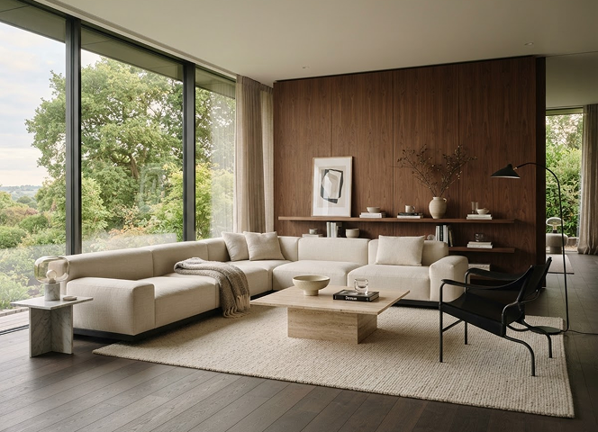
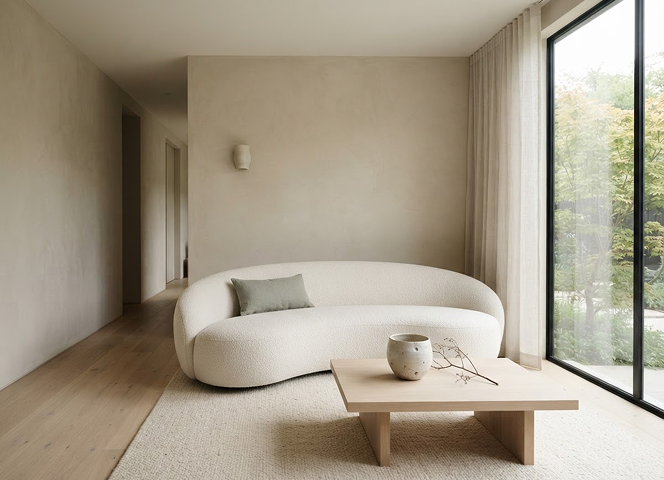
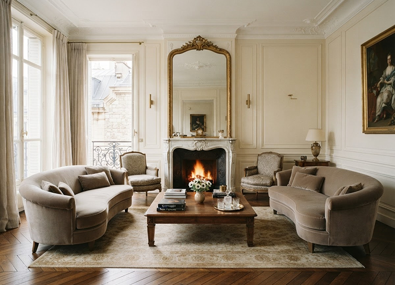
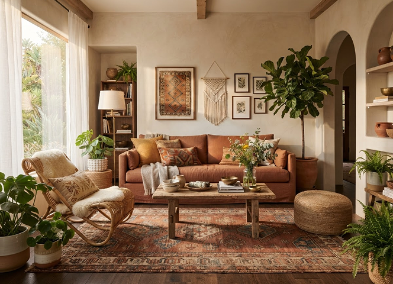

Esplora gli Stili e la
Teoria del Colore
Trova l'ispirazione studiando le caratteristiche visive e le atmosfere dei quattro grandi stili dell'abitare prima di fare il test.

Moderno
Geometrie decise, equilibrio contemporaneo.
Linee pulite e volumi ben definiti dialogano con legno, metallo e pietra. Pochi arredi, scelti con cura, danno carattere a uno spazio aperto e funzionale.
NOCE · PIETRA · METALLO BRUNITO
Una base neutra, un contrasto deciso: i toni grafite mettono in risalto la naturalezza del legno.
Minimalista
Meno elementi, più spazio per respirare.
L'essenziale diventa un modo di abitare. Superfici libere, forme leggere e materiali naturali lasciano entrare la luce, trasformando ogni stanza in una pausa dal rumore.
ROVERE CHIARO · LINO · INTONACO
Colori vicini tra loro creano continuità. Varia le texture, più che i contrasti, per dare profondità.


Classico
L'eleganza che attraversa il tempo.
Simmetrie, proporzioni armoniose e dettagli raffinati raccontano una bellezza senza fretta. Boiserie, arredi lavorati e tessuti preziosi rendono l'ambiente avvolgente e misurato.
MARMO · VELLUTO · OTTONE
Avorio e tortora ammorbidiscono le forme. Un accento ottone aggiunge luce, senza eccessi.
Boemo
Libero, personale, naturalmente imperfetto.
Trame intrecciate, oggetti di viaggio e dettagli eclettici si incontrano senza regole rigide. Rattan, tessuti materici e piante creano una casa calda, ricca di storie e personalità.
RATTAN · COTONE · CERAMICA
Terracotta e ocra scaldano la stanza; il verde oliva porta un respiro naturale nella composizione.

Il colore cambia l'atmosfera.
UNA REGOLA DA CUI PARTIRE, NON UN LIMITE60% La base
Il tono dominante di pareti e superfici: crea continuità e dà respiro.
30% Il carattere
Un colore secondario per arredi e tessili: aggiunge profondità.
10% L'accento
Un dettaglio più intenso, tra oggetti e cuscini: accende l'insieme.
Hai trovato lo stile che fa per te?
Trasforma ciò che ami in una palette di colori e materiali tutta tua.
Fai il Quiz e Scopri la tua Moodboard3 domande. La tua idea di casa, un passo più vicina.